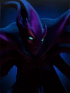
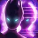

Not in the normal shop. This is one of the “spare” Undead pieces: you mainly get it when a piece holding an Ascetic's Cap is reborn as a random Undead, or through Pandaren fishing.

Haunt
Active ability: Activate on full mana
Creates a spectral nemesis behind every enemy chess piece to attack them. Spectre and her haunts always attack with Desolate effect to targets that do not have allies around them.
| ★ | ★★ | ★★★ | |
|---|---|---|---|
| HAUNT DURATION | 4 | 5 | 6 |
| MAX ILLUSIONS | 3 | 4 | 6 |
| Cooldown (s) | 20 | 15 | 10 |
| Mana cost | 100 | ||
- No huant will be created if the square behind the enemy target is occupied.
At the height of combat, Mercurials physical manifestation shatters, and the shadowy pieces haunt those who still cling to life.
Stats
| ★ | ★★ | ★★★ | |
|---|---|---|---|
| Health | 1000 | 2000 | 4000 |
| Mana | 100 | 100 | 100 |
| Armor | 8 | 8 | 8 |
| Magic resistance | 30% | 30% | 30% |
| Attack damage | 80–120 | 160–240 | 320–480 |
| Attack interval (s) | 1 | 1 | 1 |
| Attack range | 205 | 205 | 205 |
| Move speed | 500 | 500 | 500 |
 Undead · Plague
Undead · Plague
- (3) All non-Undead pieces on the board lose 10% max HP.
- (6) They lose another 30% (-40% total).
- (9) Plagued pieces also lose 5% max HP every 2s, down to a minimum of 5% of their base max HP.
 Demon Hunter · Shuttered Soul
Demon Hunter · Shuttered Soul
Each Demon Hunter counts as an extra Demon type for the enemy, which can break their single-Demon (Fel Power) bonus.
- (2) Your Demon bonus stays active no matter how many different Demons you field, and enemy Demon Hunters can't break it. Fel Power stacks count every friendly Demon plus enemy Demon Hunters (max 7).
- (4) All allies deal pure damage. Physical and magical damage is turned into pure damage at its full value, so it ignores armor and magic resistance.